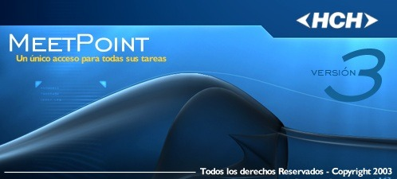
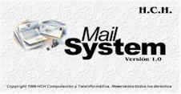

Desarrollos
HCH Digitalize Server
El HCH Digitalize Server le permitirá convertir sus mensajes de Correo y los archivos anexados a sus mensajes en imágenes para lograr documentación fiable. Esto le permite un ágil mecanismo para construir su Oficina libre de Papeles.

HCH MeetPoint
El HCH MeetPoint es un sistema para autentificar la mensajería envíada a través del correo electrónico utilizando mecanismos de encripción y hash. Posee conexión con sistemas de correo MAPI compatible (Lotus Notes, Microsoft Exchange Server, OpenMail, etc) ademas de una excelete integración con otros productos como HCH Telex, HCH Digitalize Server, HCH Auditor, etc.
HCH Enlace II
El HCH Enlace II es el resultado de una intensa búsqueda por traspasar información entre 2 máquinas garantizando la
seguridad de ambas.
Así, podrían conectarse 2 redes a través del puerto serie de comunicaciones de 2 máquinas, configurado el Hardware para
permitir el traspaso de información en una cantidad de bits a designar y en un còdigo preestablecido seleccionable, lo
cual no deja posibilidad de que algún programa dañino o virus pudiese traspasarse ya que estos utilizan 8 bits
indefectiblemente para su codificación dejando la seguridad restringida físicamente.
HCH S.W.I.F.T Gateway
Este sistema proporciona la conversión de la mensajería S.W.I.F.T para ser transmitida por otros sistemas como Télex o Correo Electrónico. Esta aplicación se enlaza perfectamente con cualquiera de los productos mencionados con anterioridad.
HCH Auditor
El HCH Auditor permite el control y seguimiento de la mensajería en curso para garantizar que la información entre y salga de su empresa efectivamente, ganando tiempo y seguridad en sus operaciones.
HCH Mail System
El HCH Mail System es una aplicación dedicada a la generación de Correo Electrónico de formato predefinido. Es completamente personalizable y se enlaza con otros sistemas facilitando el aviso de sucesos a distintas direcciones de correo según la información proporcionada por el sistema padre.
BIC IBAN
Permite realizar sobre una base de datos de Bancos las consultas y búsquedas, ya sea por Nombre del Banco , una parte
del Nombre del Banco , Ciudad en la que se encuentra el Banco , el País en el que se localiza el Banco , el BIC ,
Routing.
Así mismo el BIC IBAN , le permite calcular el IBAN , o Verificar el IBAN, determinar los Bancos intermedios.
BROADCAST
El BROADCAST archiva los mensajes "broadcast", que se generan en el ambiente SWIFT , de forma tal que se construye una
Base de Datos
Los mensajes Broadcast es una importante información que recibimos en forma diaria a través de la red, la misma deja de
ser importante cuando esta termina en una carpeta que cuando requerimos de ella es imposible encontrar en un mundo de
papeles archivados.
BROADCAST es un producto que te permite archivar estos mensajes en una base de datos para poder consultar los mismos
bajo distintos criterios de búsqueda, además le permite imprimirlos y enviarlos por e-mail, no le resulta interesante
poder enviar por mail a un grupo de usuarios en forma diaria los broadcast recibidos por medio del sistema SWIFT,
reduciendo la cantidad de impresiones y con la posibilidad de seguir contando con los mismos en la base de datos para
una futura consulta.
SWIFT to MAIL
Es común que nuestros clientes nos soliciten copia de los mensajes SWIFT emitidos y recibidos, sobre todo los
relacionados con Transferencias Bancarias , Ordenes de Pago y Cartas de Crédito para lo cual este producto se encarga de
tomar la copia del mensaje SWIFT enviado o recibido, asociarlo a la dirección de correo electrónico del cliente y
enviarle esta copia en forma automática y simultanea a la recepción del Acuse de Recibo ( "Ack" ) del mensaje SWIFT.
SWIFT to MAIL permite el envío por medio de correo electrónico en forma automática o manual de los mensajes SWIFT
enviados o recibidos, asociando el mensaje a una dirección de correo electrónico, según la parametrización de los campos
50 y 59 del SWIFT Bancario , donde se indican el cliente bancario ordenante y el cliente bancario beneficiario.
Una característica particular de SWIFT to MAIL, es que en cualquiera de los dos casos mencionados, se mantendrán los
formatos originales de Impresión del SWIFT Bancario Documental, tal cual fueran transmitidos.
MSG_SA
Por diferentes motivos, pedidos de los usuarios, Auditorias, Oficios Judiciales, requerimientos del BCRA, necesitamos
realizar copia de los mensajes SWIFT que el banco mantiene almacenados en SWIFT Alliance, ya sean archivados o en vivo,
para obtener una copia de los mensajes SWIFT en vivo contamos con el Reactivate con los riesgos que implica el uso de
este comando, y para los mensajes archivados sólo nos queda el comando de impresión que nos ofrece el Message File donde
trae los mensajes acompañado por toda su historia, obligándonos a hacer un colage de copiar / pegar por cada mensaje
para obtener un copia presentable del mensaje SWIFT que el banco intercambió.
Con MSG_SA se te permite recuperar cualquier mensaje SWIFT del banco , en su formato original con la posibilidad de
imprimir y enviar por e-mail generar un archivo o mantenerlo guardado en tu propia base de datos los que estarán siempre
disponibles más allá de las versiones de SWIFT Alliance o aplicativo que tengamos en un futuro en el banco.
Una vez capturados los mensajes SWIFT:
Te permite enviar al SWIFT por el Correo Electrónico del banco , a cualquier destino Intra Banco o Cliente Externo,
manejando una libreta de direcciones propia además de la de Outlook, los mensajes pueden ser enviados como documento
adjunto o pegado en el mail.
Te permite imprimir el SWIFT en cualquier Impresora instalada en la PC donde esta corriendo el MSG_SA.
Te permite la generación de una archivo en formato Word respetando los saltos de pagina e incluye el logotipo del banco
en cada págna.
Te permite generar un archivo de texto en un bloc de notas, para su uso en el banco.
Te permite generar distintas bases de datos para mantener guardada la información en el banco y consultarla cuando lo
deseamos, o lo requiera alguna necesidad del banco.
FORM to MAIL
Esta aplicación le permite a Ud. enviar por correo electrónico en forma automática los formularios en formato “rtf “
generados por su back office con que cuenta el banco , convirtiéndolos a "pdf" y asignándolo a las direcciones de
"e-mails" del destinatario automáticamente.
Asimismo puede asociar otros documentos que lo acompañen en el mail como textos predefinidos en el cuerpo del correo que
enviará el banco.
El mismo es de utilidad en el sistema bancario para el envío de liquidaciones y avisos de ordenes de pago generadas en
formato "rtf" por el "back office" con que cuenta la entidad bancaria.
MT940
Generación de resumen de cuenta bancario en formato MT940 según los estándares de SWIFT en archivo plano en formato
“rje” en una carpeta de Red para su posterior captura por la Aplicación SWIFT Alliance y envío al destinatario.
El mismo es alimentado por archivo plano en formato txt que la aplicación de cuentas corrientes o caja de ahorro deja en
un sitio de red.
MT.101
El proceso de Mensajes SWIFT MT101 que se dan en los bancos, tienen la finalidad de tomar los archivos dejados por SWIFT
Alliance en una carpeta de red en formato RJE conteniendo los mensajes SWIFT MT101 Recibidos.
La información contenida en estos mensajes SWIFT al ser procesada es dejada en una carpeta de la Red del banco , en un
archivo plano acorde al diseño indicado por el Usuario en la aplicación MT101.
Permite la creación de distintos tipos de diseño de salida asociados para cada cuenta bancaria según la finalidad
instruida en el MT101.